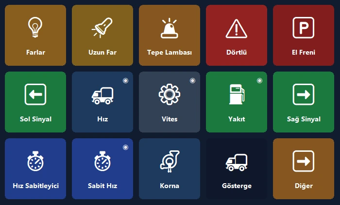
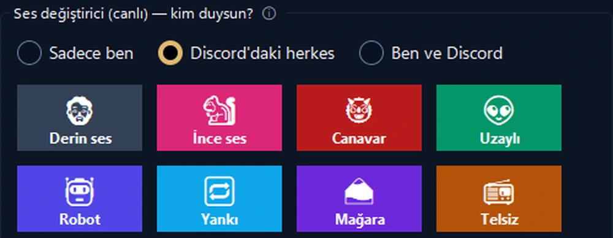

Telefonun, bilgisayarının kontrol paneli.
Tek dokunuşla kısayollar, OBS, Discord, Spotify ve oyun göstergeleri. USB, Wi‑Fi ya da mobil veriyle; uçtan uca şifreli.
Tırının gösterge paneli artık telefonunda.
Canlı hız, devir, yakıt ve gerçekçi uyarı lambaları. Hız sınırını aşınca telefon titrer.
- 🚦Gerçek göstergeHız, hız sınırı, devir, yakıt ve varış süresi; uyarı lambaları oyundaki gibi yanar.
- 🕹Tek dokunuşla kontrolFar, el freni, hız sabitleyici; sola ya da sağa tek dokunuşla bak.
- 📳Sıfır kurulumOyunu açınca telefon hazır paneli önerir; oyun her açıldığında o sayfaya kendiliğinden geçer.

Yayını tek elle yönet.
Pahalı bir cihaz yerine telefonun: OBS, ses efektleri, Discord ve müzik aynı ekranda.
- 🎬OBS kontrolüSahne, kayıt ve yayın; süreler butonun üzerinde.
- 📳Yayın sağlığı uyarısıBağlantı tıkanınca ya da kare düşünce telefon titrer.
- 🎙Canlı ses değiştiriciDiscord'a giden efektler ve ses paneli; mikrofonu tek dokunuşla kapat.

Masanın en kullanışlı ekranı.
Hazır düzenle bir dakikada başla; programlarının gerçek logoları kendiliğinden gelir.
İkinci ekran
Bilgisayar ekranını telefonda izle, dokunarak fare ve klavye gibi kullan.
Uygulama sesleri
Her programın sesini ayrı ayarla; kulaklık ↔ hoparlör tek dokunuşta.
Akıllı sayfalar
Öndeki programa göre sayfa değişir; zamanlayıcı, klasörler ve çok adımlı eylemler.
Her yerden bağlanır
Aynı Wi‑Fi şart değil: mobil veriyle de bağlanır, birden fazla bilgisayarı yönet.
Şifreli bulut yedeği
Düzenin hesap gerektirmeden şifreli yedeklenir; bilgisayar değişse de geri gelir.
Gizlilik
Hesap yok, reklam yok, takip yok. Butonların kendi cihazlarında kalır.
Kurulum bir dakika.
Programı kur
Windows için ücretsiz PanelDeck'i indirip aç.
QR kodu okut
Telefon uygulaması QR koduyla saniyeler içinde eşleşir.
Dokun
Hazır bir düzen seç ya da kendi butonlarını oluştur.
Bir kez öde, sonsuza dek senin.
Abonelik yok, reklam yok, takip yok. Tüm güncellemeler dahil.
Ücretsiz
- USB, Wi‑Fi ve mobil veriyle bağlantı
- İlk sayfada 6 buton
- Kısayol, medya, program açma, Discord, zamanlayıcı
PanelDeck Pro
- 6 sekme, sınırsız klasör ve buton
- İkinci ekran, ses kaydırıcıları, canlı bilgi
- Tır göstergesi, titreşimli uyarılar, oyun profilleri
- Şifreli bulut yedeği
Merak edilenler
Hesap açmam gerekiyor mu?
Hayır. PanelDeck hesap istemez; butonların kendi cihazlarında kalır.
Evden uzaktayken çalışır mı?
Evet. Aynı Wi‑Fi yoksa telefon mobil veriyle, uçtan uca şifreli olarak bağlanır.
Hangi oyunlarla çalışır?
Euro Truck Simulator 2 ve American Truck Simulator tam destekli. Yarış ve uçuş simülasyonları için canlı gösterge beta aşamasında.
iPhone'da var mı?
Şimdilik Android. iPhone ve iPad sürümü yol haritasında.
Windows “bilgisayarınızı korudu” derse?
“Ek bilgi” → “Yine de çalıştır”. Ayrıntılar kurulum rehberinde.